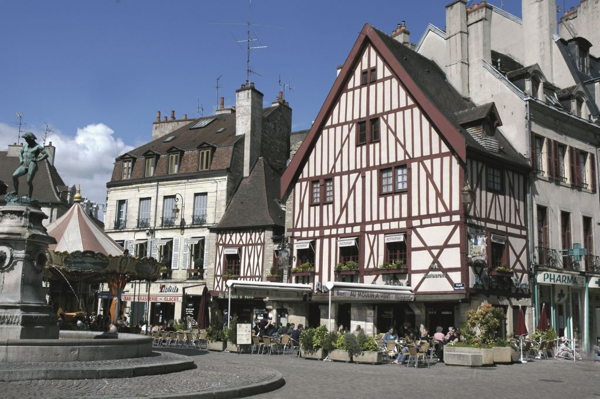
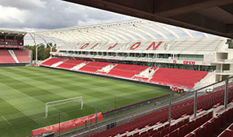

TOURISME
Le tourisme occupe une place non négligeable dans l'économie de Dijon. L'intérêt touristique de la ville repose principalement sur la richesse de son patrimoine historique et sur la proximité de la côte viticole. Ainsi, la vieille ville possède trois des dix monuments les plus visités en Côte-d'Or en 2004, année au cours de laquelle le musée des beaux-arts de Dijon a été fréquenté par plus de 210 000 visiteurs. L'agglomération compte près de 500 restaurants et plusieurs zones hôtelières (Toison d'Or, quartier de la gare centrale…). On peut distinguer à Dijon trois grands secteurs : le tourisme culturel (musées, monuments, fêtes et manifestations culturelles), le tourisme gastronomique et vini-viticole (quoique moins développé qu'à Beaune), et le tourisme d'affaires (palais des congrès et hôtels-restaurants adaptés).
| Rang | Nom |
|---|---|
| N°1 | Owl's Trail |
| N°2 | Place de la Libération |
| N°3 | Tour Philippe le Bon |
| N°4 | Paroisse Notre-Dame de Dijon |
| N°5 | Rue Des Forges |
| N°6 | Cathédrale Saint-Bénigne de Dijon |
| N°7 | Maison Millière |
| N°8 | Jardin Darcy |
| N°9 | Chartreuse de Champmol et Puits de Moïse |
| N°10 | Porte Guillaume |
| Rang | Nom |
PAS DE FLEUVE, MAIS CENT CLOCHERS

Dijon s'est imposée dès l'époque romaine comme un carrefour entre l'Europe du Nord et les régions méditerranéennes.
Au XIVème siècle, les ducs Valois de Bourgogne y fondent une des plus brillantes cours d'Europe. Dijon devient alors le siège de l'ordre de la Toison d'Or.
A partir de la Renaissance, les hôtels particuliers de la noblesse de robe redessinent "la ville aux cent clochers".
DES QUARTIERS SAUVEGARDÉS
Dijon déroule ses rues piétonnes entre maisons médiévales, églises et hôtels particuliers de la Renaissance. Aménagée par Hardouin-Mansart, la place de la Libération est l'une des plus belles de France. L'été, profitez de ses terrasses ensoleillées le temps d'une pause citadine...
Flânez ! Le parcours de la chouette vous guide à travers 22 étapes du secteur sauvegardé. Pour les sensations :
suivez l'itinéraire en Segway et... gardez l'équilibre !
DIJON, LA VILLE CULTURELLE

Monuments, musées ou panoramas... Prenez tout !
Au Musée des Beaux-Arts, installé dans le Palais des ducs et des Etats de Bourgogne, la peinture flamande côtoie la sculpture du XIXème siècle et les arts décoratifs. La collection d'art moderne est étonnante.
A la Chartreuse de Champmol, le "Puits de Moïse" témoigne du faste de la sculpture médiévale bourguignonne.
Inspirées de l'architecture classique, les Halles de Dijon ont été construites en 1868 par l'entreprise Eiffel.
L'équipe du Consortium est reconnue dans toute l'Europe pour sa capacité à dénicher les talents d'aujourd'hui.
VIGNES ET GOURMANDISES
Sur les pentes de l'ancienne appellation "Côte Dijonnaise", les festivités gourmandes sont à l'honneur ! Fêtes de la Vigne, Foire internationale et gastronomique (Table de Lucullus)... Profitez aussi de votre halte pour savourer les spécialités du Pré aux Clercs, de l'Hostellerie du Chapeau Rouge ou de Stéphane Derbord, trois restaurants étoilés. Sans oublier les nombreux bars à vins, qui vous régaleront de produits issus des caves de vignerons.
SPORTS

Les sportifs disposent de nombreuses infrastructures, stades, gymnases, courts de tennis, piscines, patinoire, bowlings, parcours de santé dans les parcs péri-urbains, centres hippiques, le golf Dijon-Bourgogne installé à Norges-la-Ville ou encore le circuit automobile de Dijon-Prenois (un Grand Prix de Bourgogne ayant localement été organisé dès 1927).
L'ouverture en 2010 de la Piscine Olympique de Dijon permet d'accueillir des compétitions de haut niveau. Une fosse de plongée permet d'entraîner les champions locaux de plongée sous-marine.
Depuis 2007, la ville a entamé des travaux de rénovation du Stade Gaston-Gérard. Finalement, sa capacité sera de 22 000 places assises. Enfin, la ville de Dijon a inauguré sa salle d'escalade Cime Altitude 245 le 1er avril 2010.
Sur le modèle de Paris Plage, la mairie de Dijon a aménagé une plage et des équipements de loisirs balnéaires autour du lac Kir. « Dijon plage » a accueilli 100 000 visiteurs en 2008. Ce dispositif complète les 4 piscines publiques, celles du Carrousel, des Grésilles, de Fontaine-d'Ouche et la piscine Olympique.
Hymne du DFCO :